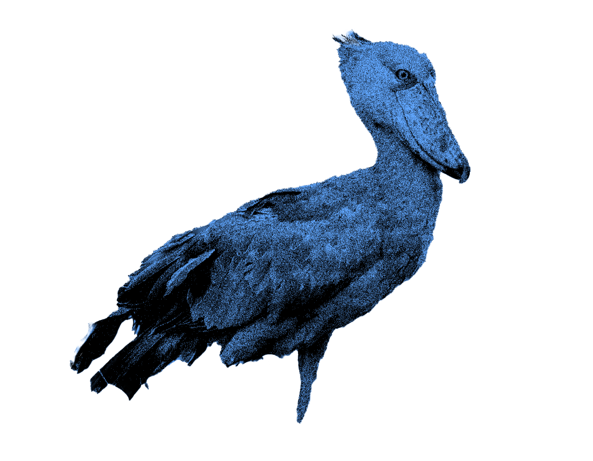

SHOEBILL
NAME
Shoebill (Also Known As: shoe-billed stork • whale-headed stork • Balaeniceps rex)
HABITAT
The White Nile area of northeastern Africa.(Britannica). in East Africa, from Ethiopia and South Sudan to Zambia (NG)
CLASSIFICATION SPECIES
Akin to pelicans and heroins
SIZE
5 kg
ECOLOGY
Reach maturity at 3-4 years. Live solitary as even mating pairs don’t take a meal in the same place. Favorite food is lungfish. They have a unique hunting style to wait for fishes to come to the water surface.
CULTURAL REPRESENTATION
Get popularity through TikTok from 2014 as an intimidating figure.
